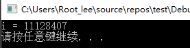
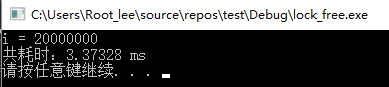
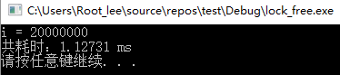

C++性能榨汁机之无锁编程
前言
私以为个人的技术水平应该是一个螺旋式上升的过程：先从书本去了解一个大概，然后在实践中加深对相关知识的理解，遇到问题后再次回到书本，然后继续实践……接触C++并发编程已经一年多，从慢慢啃《C++并发编程实战》这本书开始，不停在期货高频交易软件的开发实践中去理解、运用、优化多线程相关技术。多线程知识的学习也是先从最基本的线程建立、互斥锁、条件变量到更高级的线程安全数据结构、线程池等等技术，当然在项目中也用到了简单的无锁编程相关知识，今天把一些体会心得跟大家分享一下，如有错误，还望大家批评指正。
多线程并发读写
在编写多线程程序时，最重要的问题就是多线程间共享数据的保护。多个线程之间共享地址空间，所以多个线程共享进程中的全局变量和堆，都可以对全局变量和堆上的数据进行读写，但是如果两个线程同时修改同一个数据，可能造成某线程的修改丢失；如果一个线程写的同时，另一个线程去读该数据时可能会读到写了一半的数据。这些行为都是线程不安全的行为，会造成程序运行逻辑出现错误。举个最简单的例子：
1 |
|
上面代码main函数中建立了两个线程thread1和thread2，两个线程都是运行iplusplus函数，该函数功能就是运行i++语句10000000次，按照常识，两个线程各对i自增10000000次，最后i的结果应该是20000000，但是运行后结果却是如下：

i并不等于20000000，这是在多线程读写情况下没有对线程间共享的变量i进行保护所导致的问题。
有锁编程
对于保护多线程共享数据，最常用也是最基本的方法就是使用C++11线程标准库提供的互斥锁mutex保护临界区，保证同一时间只能有一个线程可以获取锁，持有锁的线程可以对共享变量进行修改，修改完毕后释放锁，而不持有锁的线程阻塞等待直到获取到锁，然后才能对共享变量进行修改，这种方法几乎是并发编程中的标准做法。大体流程如下：
1 |
|
代码14行和16行分别为互斥锁加锁和解锁代码，29行我们打印程序运行耗时，代码运行结果如下：

可以看到，通过加互斥锁，i的运行结果是正确的，由此解决了多线程同时写一个数据产生的线程安全问题，代码总耗时3.37328ms。
无锁编程
原子操作是无锁编程的基石，原子操作是不可分隔的操作，一般通过CAS(Compare and Swap)操作实现，CAS操作需要输入两个数值，一个旧值（期望操作前的值）和一个新值，在操作期间先比较下旧值有没有发生变化，如果没有发生变化，才交换成新值，发生了变化则不交换。C++11的线程库为我们提供了一系列原子类型，同时提供了相对应的原子操作，我们通过使用这些原子类型即可摆脱每次对共享变量进行操作都进行的加锁解锁动作，节省了系统开销，同时避免了线程因阻塞而频繁的切换。原子类型的基本使用方法如下：
1 |
|
代码的第8行定义了一个原子类型（int）变量i，在第13行多线程修改i的时候即可免去加锁和解锁的步骤，同时又能保证变量i的线程安全性。代码运行结果如下：

可以看到i的值是符合预期的，代码运行总耗时1.12731ms，仅为有锁编程的耗时3.37328ms的1/3，由此可以看出无锁编程由于避免了加锁而相对于有锁编程提高了一定的性能。
总结
无锁编程最大的优势是什么？是性能提高吗？其实并不是，我们的测试代码中临界区非常短，只有一个语句，所以显得加锁解锁操作对程序性能影响很大，但在实际应用中，我们的临界区一般不会这么短，临界区越长，加锁和解锁操作的性能损耗越微小，无锁编程和有锁编程之间的性能差距也就越微小。
我认为无锁编程最大的优势在于两点：
- 避免了死锁的产生。由于无锁编程避免了使用锁，所以也就不会出现并发编程中最让人头疼的死锁问题，对于提高程序健壮性有很大积极意义
- 代码更加清晰与简洁。对于一个多线程共享的变量，保证其安全性我们只需在声明时将其声明为原子类型即可，在代码中使用的时候和使用一个普通变量一样，而不用每次使用都要在前面写个加锁操作，在后面写一个解锁操作。我写的C++期货高频交易软件中，有一个全局变量fund，存储的是当前资金量，程序采用线程池运行交易策略，交易策略中频繁使用到fund变量，如果采用加锁的方式，使用起来极其繁琐，为了保护一个fund变量需要非常频繁的加锁解锁，后来将fund变量改为原子类型，后面使用就不用再考虑加锁问题，整个程序阅读起来清晰很多。
如果是为了提高性能将程序大幅改写成无锁编程，一般来说结果可能会让我们失望，而且无锁编程里面需要注意的地方也非常多，比如ABA问题，内存顺序问题，正确实现无锁编程比实现有锁编程要困难很多，除非有必要（确定了性能瓶颈）才去考虑使用无锁编程，否则还是使用互斥锁更好，毕竟程序的高性能是建立在程序正确性的基础上，如果程序不正确，一切性能提升都是徒劳无功。